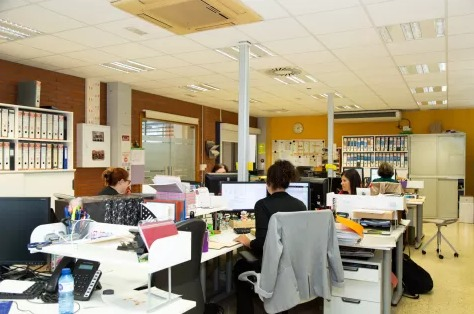
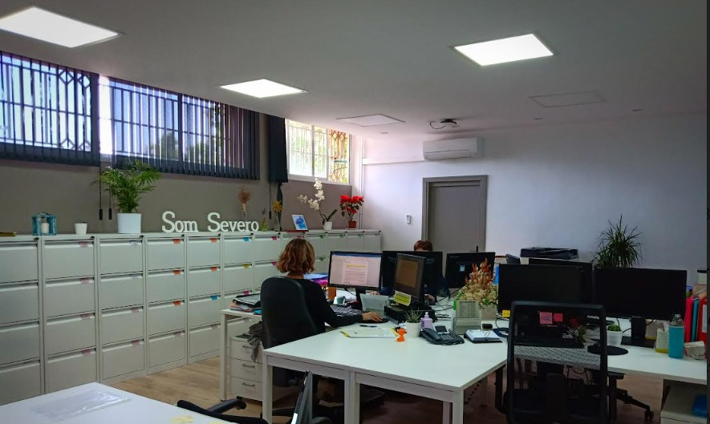

Actualmente, la gestión económica se basa en un software accesible sólo desde el equipo local, lo que limita la colaboración, la seguridad de los datos y el trabajo remoto.
- No hay acceso remoto por parte de otros departamentos como dirección o secretaría.
- No existen copias de seguridad externas ni integraciones con sistemas digitales de validación.
- Trámites aún se realizan en papel y requieren validación manual.


| Diagnóstico | Propuestas de Soluciones Digitales | Objetivos del PTD |
|---|---|---|
| El software actual sólo es accesible desde el ordenador local del administrador. | Acceso remoto con perfiles para diferentes roles (secretaría, dirección). | Garantizar el acceso remoto y colaborativo junto con la disponibilidad de los datos. |
| No hay copias de seguridad en la nube y la colaboración en tiempo real es limitada. | Migración del software económico a una plataforma cloud segura con copias automáticas. | Reducir el riesgo de pérdida de datos y asegurar un respaldo externo. |
| Falta integración con otros departamentos (como comedor o secretaría). | Integración de datos entre departamentos mediante herramientas compartidas. | Mejorar la eficiencia y coordinación entre áreas. |
| Los trámites económicos son manuales y en papel. | Digitalización de formularios y solicitudes económicas con firma digital. | Automatizar procesos para reducir errores y agilizar la gestión. |
Acciones a implementar:
- Habilitar una zona privada en la web con acceso restringido para roles específicos.
- Formularios digitales para trámites económicos como solicitud de becas, pagos de cuotas o certificados.
- Migrar los datos económicos a un entorno cloud con acceso remoto.
- Software cloud como Sage Cloud o Contasol Cloud.
- Sistema de validación de identidad con cuentas institucionales (Google/Microsoft).
- Equipo técnico y administrativo para la migración y pruebas del sistema.
- Preparación: 3 semanas
- Implementación: 1 mes
- Coordinador TIC
- Equipo de administración
- Dirección